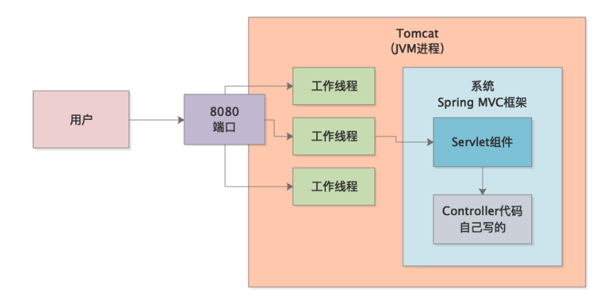
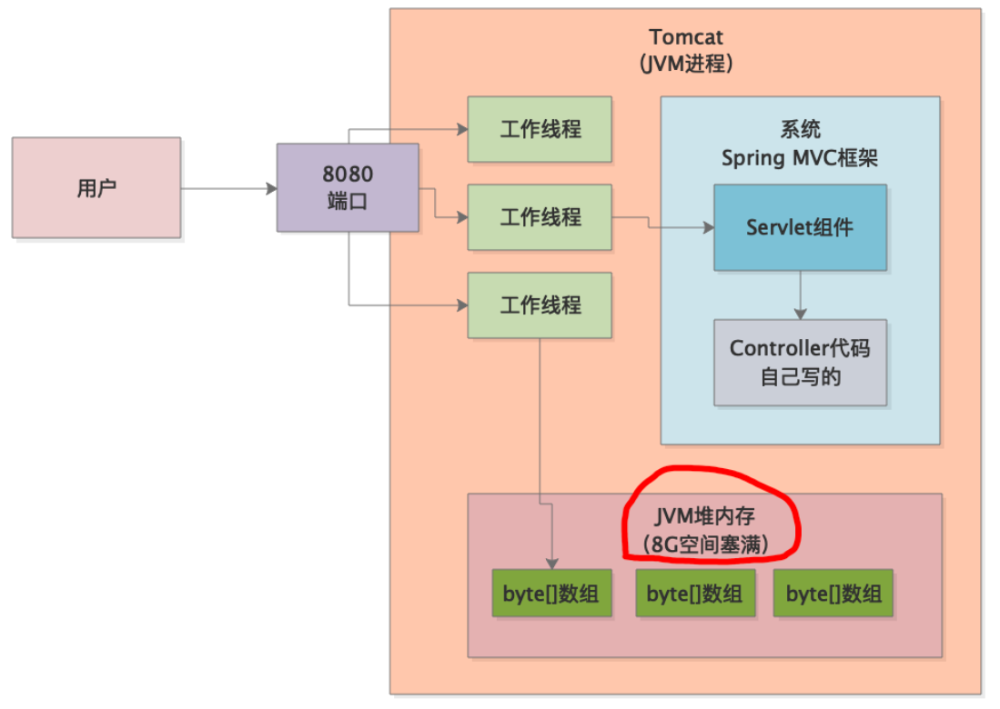
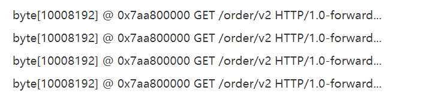
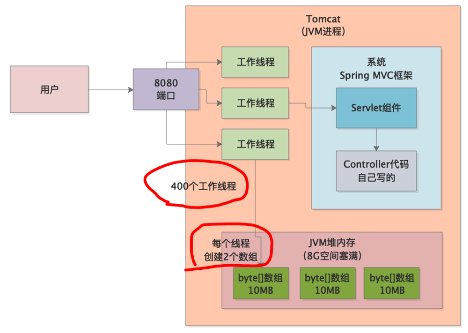
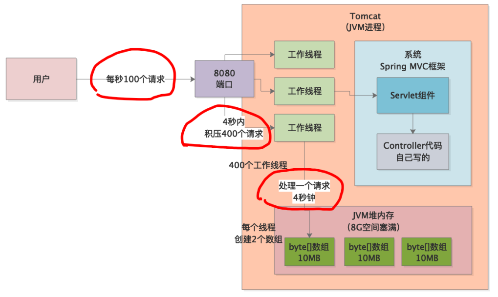
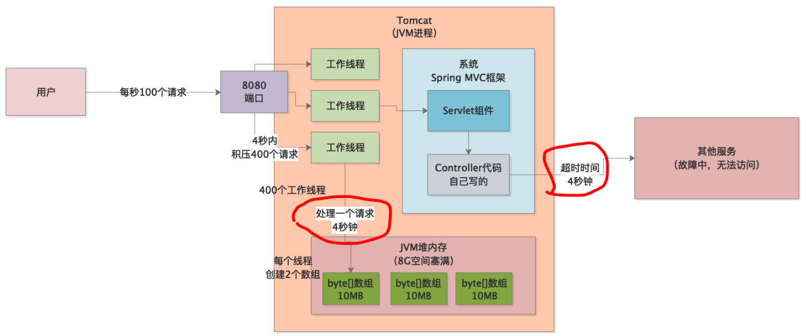

本章，我们将通过实际案例讲解一个Web应用的内存溢出问题，该内存溢出问题的排查涉及Tomcat的一些底层原理，最终排查发现是由于请求超时问题导致，我们先来看下系统的背景。
生产环境的一个系统发生告警，拿到生产日志后出现如下字样：Exception in thread "http-nio-8080-exec-1089" java.lang.OutOfMemoryError:Java heap space。
很明显，Java堆内存区域发生了内存溢出异常。特别要注意的是http-nio-8080-exec-1089，由于当时系统部署在tomcat中（8080端口），所以上面这段日志的意思就是tomacat工作线程在处理请求时发生了内存溢出异常。
为什么会是tomcat的工作线程发生异常？这就涉及tomcat的一些基本原理。
首先，我们明确一点Tomcat运行时本身就是一个JVM进程，我们写好的程序打包后放到tomcat的指定目录下，程序中的各种类会由Tomcat加载到它的JVM内存区域中，然后由tomcat来执行我们程序中的类：

tomcat有许多自己的工作线程，它们默认会监听8080端口。8080端口上收到的请求会均匀分配给这些工作线程，工作线程接收到请求后负责调用程序自身的Servlet进行处理。上述异常日志中的http-nio-8080-exec-1089，说白了就是上图中的tomcat工作线程，因为它负责调用Spring中的一大堆代码，发现运行时堆内存不够了，所以就抛出了异常。
Spring Boot应用可以把web容器直接内嵌在我们打包后的程序中，但本质还是一样的。
知道了系统的大致情况，我们就要用MAT来分析下事故现场的堆内存快照了（线上系统记得加上JVM参数-XX:+HeapDumpOnOutOfMemoryError）。
我们分析内存快照，首先要找到占用堆内存最大的对象。我们发现有一大堆byte[]数组占据了大约8G的内存，而当时线上机器给Tomcat的JVM堆内存也是8G。这说明，tomcat工作线程在处理请求时大量创建了这些byte[]数组，直接把堆内存占满了，从而导致内存溢出。

然后，我们继续分析这些byte[]数组到底是个啥，通过MAT找了很多类似下面这样的数组，每个10MB，一共约800个，总量约8G：

通过MAT的引用分析，发现这些数组都被一个名为org.apache.tomcat.util.threads.TaskThread的Tomcat类引用着，这个一看就是Tomcat自己的线程类。MAT可以查看当前JVM中有哪些线程存在，我们发现上述种tomcat线程一个约400个，每一个引用着2个byte[]数组。
也就是说：400个tomcat工作线程同时在处理请求，每个线程创建了2个10MB的byte[]数组，结果就总共创建了8G的数组，进而导致了内存溢出。

根据上述分析，我们的脑海里应该有这样一副流动画面：1秒钟内来了400个请求，导致tomcat的400个工作线程同时开始处理请求，每个线程在处理请求时会创建2个10MB的byte[]数组对象，用于自用，结果瞬间把8G内存空间占满，触发内存溢出异常。
但是，我们通过监控系统发现，事故现场的QPS只有100，而不是400！出现这种情况只有一种可能，请求超时了，每个请求的处理时间达到4s，这样4s内400个工作线程会在同时工作，进而导致上述问题。

那么现在就剩下两个问题：
先来看第一个，tomcat的配置文件中有一个max-http-header-size:10000000配置，根据查阅tomcat文档我们知道，这个是tomcat工作线程为请求和响应创建的数组，可以适当调小些，但是10MB也在合理范围内。所以，问题的根本原因就是程序超时。
我们通过程序日志发现，有大量的Timeout Exception字样，这是程序在通过RPC调用其他系统接口时抛出的，然后通过RPC超时参数配置发现，超时时间刚好是4s！
也就是说，在某一段时间内，某个外部依赖系统刚好挂掉了，导致我们系统通过RPC调用它的接口时出现大量超时，而在超时的4s内，工作线程会hang住，从而引发内存溢出，所以这个4s请求超时的配置是根本原因。

分析清楚了问题原因，优化就很简单了，直接将超时时间改为1s就可以了。这样的话，每秒100个请求过来，每个拥有2个byte数组，那总共就是2G，不会将JVM堆内存占满，然后超过1s就超时，请求结束。
超时时间的配置要根据系统运行时模型合理配置。除此之外，一些核心系统，必须要有熔断、降级、限流的机制，可以通过Hystrix来实现，没有接触过的读者可以参阅Hystrix官方资料或阅读我的分布式系列了解。
本章，我们通过一个实际案例分析了因为请求超时引起的内存溢出问题，以及相应的排查思路。解决这类问题的思路其实都是一致的，需要一步步去分析，在实践中积累经验，举一反三。